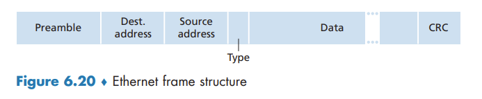
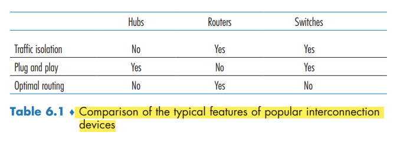

Switched Local Area Networks
Switched Local Area Networks
Link-Layer Addressing and ARP
MAC Addresses
In truth, it is not hosts and routers that have link-layer addresses but rather their adapters (that is, network interfaces) that have link-layer addresses.
A link-layer address is variously called a LAN address, a physical address, or a MAC address.
For most LANs the MAC address is 6 bytes long, giving 2^48 possible MAC addresses. the IEEE manages the MAC address space. IEEE allocates the chunk of 224 addresses by fixing the first 24 bits of a MAC address and letting the company create unique combinations of the last 24 bits for each adapter.
An adapter’s MAC address has a flat structure. An adapter’s MAC address is analogous to a person’s social security number, An IP address is analogous to a person’s postal address.
sometimes a sending adapter does want all the other adapters on the LAN to receive and process the frame it is about to send. In this case, the sending adapter inserts a special MAC broadcast address into the destination address field of the frame (FF-FF-FF-FF-FF-FF)
Address Resolution Protocol (ARP)
Because there are both network-layer addresses (for example, Internet IP addresses) and link-layer addresses (that is, MAC addresses), there is a need to translate between them. For the Internet, this is the job of the Address Resolution Protocol (ARP)
ARP resolves an IP address to a MAC address. In many ways it is analogous to DNS. difference between the two resolvers is that DNS resolves host names for hosts anywhere in the Internet, whereas ARP resolves IP addresses only for hosts and router interfaces on the same subnet.
An ARP packet has several fields, including the sending and receiving IP and MAC addresses. Both ARP query and response packets have the same format. The purpose of the ARP query packet is to query all the other hosts and routers on the subnet to determine the MAC address corresponding to the IP address that is being resolved.
the query ARP message is sent within a broadcast frame, whereas the response ARP message is sent within a standard frame.
ARP is probably best considered a protocol that straddles the boundary between the link and network layers
Sending a Datagram off the Subnet
For each router interface there is also an ARP module (in the router) and an adapter.
in order for a datagram to go from a host on Subnet 1 to a host on Subnet 2, the datagram must first be sent to the (router interface with the IP address of) the first-hop router on the path to the final destination. The router now has to determine the correct interface on which the datagram is to be forwarded.
Ethernet
Today, Ethernet is by far the most prevalent wired LAN technology, and it is likely to remain so for the foreseeable future.
Recall that we covered Ethernet’s CSMA/CD multiple access protocol with binary exponential backoff in Section 6.3.2.
A hub is a physical-layer device that acts on individual bits rather than frames.
In the early 2000s, Ethernet experienced yet another major evolutionary change. Ethernet installations continued to use a star topology, but the hub at the center was replaced with a switch. switch is not only “collision-less” but is also a store-and-forward packet switch, operating only up through layer 2.
Ethernet Frame Structure

Ethernet technologies provide an unreliable service to the network layer. When a frame fails the CRC check, adapter B simply discards the frame.
Ethernet Technologies
Ethernet comes in many different flavors, with somewhat bewildering acronyms such as 10BASE-T, 10BASE-2, 100BASE-T, 1000BASE-LX, 10GBASE-T and 40GBASE-T. The first part of the acronym refers to the speed of the standard. “BASE” refers to baseband Ethernet, meaning that the physical media only carries Ethernet traffic. The final part of the acronym refers to the physical media itself; Ethernet is both a link-layer and a physical-layer specification and is carried over a variety of physical media including coaxial cable, copper wire, and fiber. Generally, a “T” refers to twisted-pair copper wires.
As we’ll see shortly, a switch coordinates its transmissions and never forwards more than one frame onto the same interface at any time. Furthermore, modern switches are full-duplex, so that a switch and a node can each send frames to each other at the same time without interference. In other words, in a switch-based Ethernet LAN there are no collisions and, therefore, there is no need for a MAC protocol!
Link-Layer Switches
Forwarding and Filtering
Filtering is the switch function that determines whether a frame should be forwarded to some interface or should just be dropped. Forwarding is the switch function that determines the interfaces to which a frame should be directed, and then moves the frame to those interfaces. Switch filtering and forwarding are done with a switch table.
To understand how switch filtering and forwarding work, suppose a frame with destination address DD-DD-DD-DD-DD-DD arrives at the switch on interface x. The switch indexes its table with the MAC address DD-DD-DD-DD-DD-DD. There are three possible cases:
- There is no entry in the table for DD-DD-DD-DD-DD-DD. In this case, the switch forwards copies of the frame to the output buffers preceding all interfaces except for interface x. In other words, if there is no entry for the destination address, the switch broadcasts the frame.
- There is an entry in the table, associating DD-DD-DD-DD-DD-DD with interface x. In this case, the frame is coming from a LAN segment that contains adapter DD-DD-DD-DD-DD-DD. There being no need to forward the frame to any of the other interfaces, the switch performs the filtering function by discarding the frame.
- There is an entry in the table, associating DD-DD-DD-DD-DD-DD with interface y≠x. In this case, the frame needs to be forwarded to the LAN segment attached to interface y. The switch performs its forwarding function by putting the frame in an output buffer that precedes interface y.
Self-Learning
Switches are self-learning. This capability is accomplished as follows:
- The switch table is initially empty.
- For each incoming frame received on an interface, the switch stores in its table (1) the MAC address in the frame’s source address field, (2) the interface from which the frame arrived, and (3) the current time. In this manner, the switch records in its table the LAN segment on which the sender resides. If every host in the LAN eventually sends a frame, then every host will eventually get recorded in the table.
- The switch deletes an address in the table if no frames are received with that address as the source address after some period of time (the aging time). In this manner, if a PC is replaced by another PC (with a different adapter), the MAC address of the original PC will eventually be purged from the switch table.
Properties of Link-Layer Switching
We can identify several advantages of using switches, rather than broadcast links such as buses or hub-based star topologies:
- Elimination of collisions.
- Heterogeneous links.
- Management.
Switches Versus Routers
Although a switch is also a store-and-forward packet switch, it is fundamentally different from a router in that it forwards packets using MAC addresses.
First consider the pros and cons of switches. As mentioned above, switches are plug-and-play, a property that is cherished by all the overworked network administrators of the world. Switches can also have relatively high filtering and forwarding rates—as shown in Figure 6.24, switches have to process frames only up through layer 2, whereas routers have to process datagrams up through layer 3. On the other hand, to prevent the cycling of broadcast frames, the active topology of a switched network is restricted to a spanning tree. Also, a large switched network would require large ARP tables in the hosts and routers and would generate substantial ARP traffic and processing. Furthermore, switches are susceptible to broadcast storms—if one host goes haywire and transmits an endless stream of Ethernet broadcast frames, the switches will forward all of these frames, causing the entire network to collapse.
Now consider the pros and cons of routers. packets are not restricted to a spanning tree and can use the best path between source and destination. they provide firewall protection against layer-2 broadcast storms. not plug-and-play. Also, routers often have a larger per-packet processing time than switches,
Switches suffice for these small networks, as they localize traffic and increase aggregate throughput without requiring any configuration of IP addresses. But larger networks consisting of thousands of hosts typically include routers within the network (in addition to switches). The routers provide a more robust isolation of traffic, control broadcast storms, and use more “intelligent” routes among the hosts in the network.
